٧١ محطة في
١١ مراحل، تفصلها
٣ بوابات إتقان. والتالي مقفلٌ حتى يُتمّ الذي
قبله — فالطريق واحد، ولا قائمةَ يختار منها الطفل. وفي كل محطةٍ
جبهةٌ معلَنة: أقصى عددٍ يُستعمل فيها، وأشكالُ الكميات التي تُرسم،
ورموزُ العمليات المسموح بها — وبرنامجُ فحصٍ يرفض كل جولةٍ تتجاوزها.
حلقةُ المحطة — أربعُ خطواتٍ في ٣–٥ دقائق
١ · شاهِدْ
نمذجةٌ بلا مطالبة: تُعَدّ الكميةُ أمامه عنصراً عنصراً بالصوت، فيرى
الدرسَ قبل أن يُسأل عنه.
٢ · جَرِّبْ مَعِي
جولتان بعونٍ مرئيّ — غيرُ محسوبتين في القياس، فلا يُحاسَب على
خطوةِ تعلُّمٍ بعون.
٣ · وَحْدَكْ
أربعُ جولاتٍ إلى ستّ مستقلّة — وهي المقيسة وحدَها. والخطأ
فيها يُعَدّ أمامه ثم يحاول ثانية.
٤ · كافِئْ
نجومٌ بعتبةٍ تناسب طولَ النشاط، وميداليةٌ تحمل معلمَ مرحلته
لا أيقونةً محايدة.
ولا مؤقّتَ ضغطٍ في التطبيق كلِّه، ولا شاشةَ «خطأ»، ولا عقاب. و«الخطف»
(عرضُ الكمية لحظةً ثم تغطيتها) طبيعةُ تمرينٍ لا سباقُ وقت: يمنع
العدَّ فيُجبِر التقدير، وزرُّ إعادة العرض تحته
بلا حدٍّ ولا احتساب.
المرحلة ١ — الكَمُّ بِلَا رَمْز
ستُّ محطات، ولا رمزٍ عدديّ واحد على الشاشة فيها: خطواتُ الحلقة
أسماؤها، وجولاتُها خرزاتٌ تمتلئ، وجوابُ التمرين بطاقةُ كمٍّ لا رقم.
والمقصودُ أن يصير العددُ شيئاً يُرى قبل أن يصير علامةً تُقرأ.
نوع محطة · تقديرٌ فوريّ
كَمْ تَرَى؟
٣محطات
ماذا يتعلّم الطفل
أن يعرف الكميةَ الصغيرة بنظرةٍ واحدة بلا عدّ — واحداً
واثنين، ثم ثلاثة، ثم أربعةً وخمسة — على وجه النرد والمبعثر
وأشياء عالمه.
كيف يعمل التمرين
تُعرَض الكميةُ لحظةً ثم تُغطّى، ويختار البطاقةَ التي فيها
مثلُها. والغطاءُ يمنع العدَّ فيُجبِر التقدير، ومعه
زرُّ إعادة عرضٍ بلا حدّ. وعند الخطأ يُرفع الغطاء
وتُعَدّ الكميةُ أمامه ثم يحاول.
دورُك أنت
لا تعدّ معه هنا. إن تردّد فقُل «انظر ثم قل» — فالمقصود لمحةٌ
لا حساب.
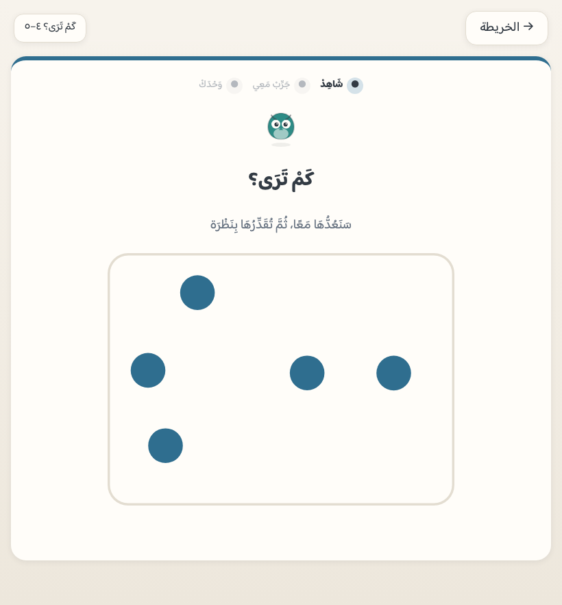
نوع محطة · مطابقة
طَابِقِ الكَمِّيَّتَيْن
١محطة
ماذا يتعلّم الطفل
أنّ الكميةَ واحدةٌ وإن اختلف شكلُها: ثلاثُ نقاطٍ على النرد هي
ثلاثُ تفاحاتٍ مبعثرة.
كيف يعمل التمرين
كميةٌ فوقها، وثلاثُ بطاقاتٍ بنمطٍ آخر — يختار التي
تساويها عدداً. والحكمُ على ما رُسِم فعلاً لا على ما طُلب رسمه.
دورُك أنت
اسأله بعدها: «كيف عرفت؟» — الجواب يريك أيقدّر أم يعدّ.
كميّتان متجاورتان بمقاسٍ واحد للعنصر — فتقع المقارنةُ على العدد
لا على المساحة. وعند الخطأ تُعَدّان أمامه صفّاً تحت صفّ.
دورُك أنت
لا تصحّح بالرقم («هذه خمسة») — دعه يعدّ الصفّين، فالمقارنةُ
هنا كمّيةٌ لا رمزية.
المرحلة ٢ — العَدُّ المُرْتَبِطُ بِالكَمّ
ستُّ محطات تُدرَّس فيها مبادئُ العدّ قصداً لا عرَضاً: لمسةٌ لكل عنصر،
وثباتُ ترتيب الأسماء، وآخِرُ ما نطقتَ هو الجواب، وكلُّ شيءٍ
يُعَدّ، والترتيبُ لا يغيّر العدد. ولا رمزَ عدديّ بعدُ.
نوع محطة · عدٌّ باللمس
الْمِسْ وَعُدَّ
٥محطات
ماذا يتعلّم الطفل
أن يعدّ ١–٣ ثم ١–٥ ثم ٦–٧ ثم ٨–١٠ بلمسةٍ لكل عنصر، ثم
يجيب «كم صارت كلُّها؟». وفي آخرها: تُبعثَر الكميةُ نفسُها
وتُعَدّ ثانيةً — والعددُ هو هو.
كيف يعمل التمرين
كلُّ لمسةٍ تُعلّم عنصراً وتنطق اسمَ رتبته، والعنصرُ
الملموس يُعطَّل فلا يُعَدّ مرتين — امتناعٌ في البنية لا
تنبيهٌ بعد الخطأ. وفي محطة ٨–١٠ يزيد سؤال «أَعْطِنِي هَذَا
الْعَدَدْ»: يُسمّى المطلوبُ صوتاً ويُرى نموذجُه خطفةً ثم
يُغطّى، فيلتقط الطفلُ بقدره من صندوقٍ أوسع.
دورُك أنت
اترك إصبعَه يسبق الصوت — فالتطبيق ينتظره ولا يدهس عدَّه.
وإن أخطأ فلا تقل الجواب: سيُعَدُّ أمامه.
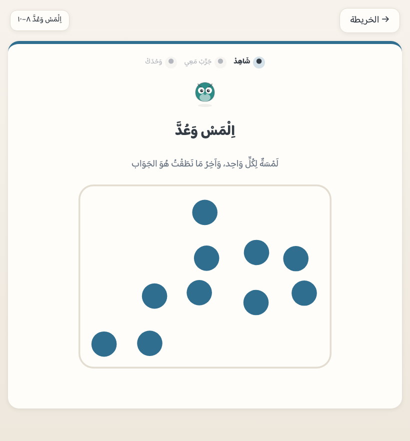
نوع محطة · تسوية
اجْعَلْهُمَا سَوَاء
١محطة
ماذا يتعلّم الطفل
أن يغيّر الكميةَ بيده حتى تساوي أختَها — وهي أوّلُ صورةٍ
للجمع والطرح قبل أن يكون لهما رمز.
كيف يعمل التمرين
تحت كل كميةٍ زرّا «أَضِفْ» و«أَزِلْ» — كلمتان لا علامتان،
فالعلامةُ تدخل الرحلةَ في المرحلة ٦. ولا يخرج بالعدد عن جبهة
محطته.
دورُك أنت
اسأله: «كم أضفتَ؟» — سؤالٌ يجعل الفعلَ عدداً في ذهنه.
رموزَ ١–١٠ رمزين رمزين ومعها إطارُ الخمسة وإطارُ
العشرة، ثم الصفرَ في محطته. ولكلِّ رمزٍ مفتاحُ قياسٍ مستقلّ —
فلا يُخفى تعثّرُه في «٧» تحت إتقانه لِـ«٣».
كيف يعمل التمرين
تُعَدُّ الكميةُ أوّلاً، ثم يُكشَف رمزُها فوقها، ثم
تدور المطابقةُ في الاتجاهين في المحطة نفسِها: «أيُّ رمزٍ
لهذه؟» و«أين هذا العدد؟».
دورُك أنت
لا تطلب منه كتابةَ الرقم — الكتابةُ ليست في هذا التطبيق،
والمقصودُ هنا أن يقرأه ويعرف كمَّه.
المرحلة ٤ — قَارِنْ وَرَتِّبْ
أربعُ محطات تنقل المقارنةَ من الكمّ إلى الرمز، وتضع الأعدادَ على خطٍّ
يبدأ من اليمين — اتفاقاً مع إطار العشرة الذي يُملأ من اليمين،
ومع اتجاه قراءة الطفل العربيّ.
نوع محطة · مقارنةُ رموز
أَكْبَرُ وَأَصْغَر
١محطة
ماذا يتعلّم الطفل
أن يقارن رمزين بلا عدٍّ — ومعرفتُه بموضع كلٍّ منهما هي
المقصودة، لا حفظُ علامتَي «أكبر من» و«أصغر من».
كيف يعمل التمرين
رمزان يُسأل عن أكبرهما أو أصغرهما، وعند الخطأ
تُكشَف كميّتاهما صفّين متحاذيين وتُعَدّان — فيرى الفرق
ولا يُلقَّن.
دورُك أنت
سلْه: «كم بينهما؟» — سؤالُ الفرق بابُ المرحلة السادسة.
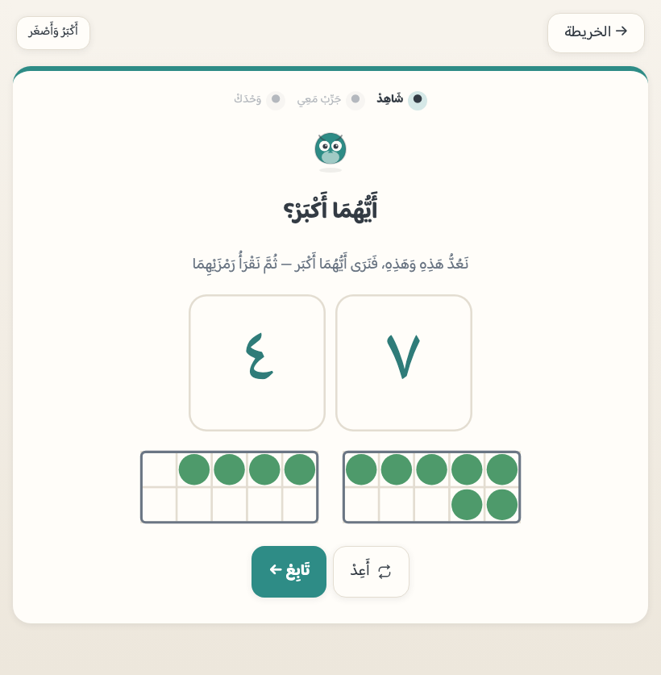
نوع محطة · خطُّ الأعداد
أَيْنَ يَقَع؟ ٠–١٠
١محطة
ماذا يتعلّم الطفل
أنّ للعدد موضعاً لا كمّاً فقط — وهو أساسُ الحساب الذهنيّ
لاحقاً (العدُّ تصاعداً ونزولاً على الخطّ).
كيف يعمل التمرين
خطٌّ بعلاماتٍ تُعَدّ، يضع عليه العددَ المطلوب. وعند الخطأ
يُعَدُّ عليه من الصفر علامةً علامة.
دورُك أنت
أشِر إلى الخطّ لا إلى الجواب — والعدُّ عليه هو الدرس.
نوع محطة · ترتيب
رَتِّبْ
١محطة
ماذا يتعلّم الطفل
ترتيبَ ثلاثة رموزٍ من الأصغر إلى الأكبر.
كيف يعمل التمرين
يختار الأصغرَ فالأصغر، والاختيارُ الخاطئ لا ينقل — يُعرَض
الترتيبُ الصحيح كمّاً ثم يُعاد السؤال.
دورُك أنت
رتّبْ معه أشياءَ البيت بالعدد — الترتيبُ عادةٌ لا شاشة.
نوع محطة · الجارَان
السَّابِقُ وَالتَّالِي
١محطة
ماذا يتعلّم الطفل
ما قبل العدد وما بعده مباشرةً — وهو ما يجعل «واحداً أكثر»
و«واحداً أقلّ» معنىً لا حفظاً.
كيف يعمل التمرين
رمزٌ في وسط الشاشة، ويُسأل عن سابقه أو تاليه، والخطُّ حاضرٌ
عوناً عند الخطأ.
دورُك أنت
العبْ معه «ما بعد ٦؟» في السيارة — دقيقةٌ تكفي.
البوابات الثلاث — إتقانٌ بلا رسوب
بين المراحل ثلاثُ بوابات: ٣ محطاتٍ من نوعٍ
واحد، وكلُّ واحدةٍ منها جلسةٌ من أضعف ما في يد الطفل ضمن مدىً
معلَن. ولا رسوبَ فيها ولا عودةَ إلى الوراء: تُعاد حتى تُعبَر.
لا شيءَ جديداً — البوابةُ تثبيتٌ لا تدريس: عشرةُ
تمارينَ مما درسه، تُختار من أضعف مهاراته في مدى البوابة
المعلَن (الأولى من المرحلتين ١–٤، والثانية من العمليات،
والثالثة من الرحلة كلِّها).
كيف يعمل التمرين
تمارينُ الرحلة نفسُها بشاشاتها نفسِها، والخطأُ فيها كالخطأ
فيها: يُعَدُّ أمامه ويحاول. وعند العبور نجمةٌ ووجهُ بوابة —
وليس فيها لفظُ رسوب.
دورُك أنت
اجلس معه في البوابة إن أحببت — فهي أطولُ من محطةٍ عادية،
وهي أصدقُ ما يريك أين هو.
المرحلة ٥ — رَكِّبْ وَفَكِّكْ (الجسور)
ستُّ محطات، ولا رمزَ عمليةٍ واحد فيها: العددُ يُركَّب من جزأين
ويُفكَّك إليهما. وهذه المرحلةُ هي التي تجعل الجمعَ لاحقاً
تركيبَ معلومٍ لا طقساً رمزياً.
نوع محطة · جسورُ الأعداد
اِصْنَعِ العَدَد · أَصْدِقَاءُ العَشَرَة
٦محطات
ماذا يتعلّم الطفل
جسورَ ٣ و٤ ثم ٥ ثم ٦ و٧ ثم ٨ و٩ ثم أصدقاءَ العشرة،
ومعها أنّ العددَ الواحد يُصنَع بأكثر من طريق.
كيف يعمل التمرين
وجهان: جزآن يُوضَعان في خانتَي الكلّ، و«ما بقي للعشرة» حيث
خاناتُ الإطار الفارغة هي السؤال. وما يزيد على المطلوب
لا يُلمَس أصلاً (البطاقةُ تُعطَّل)، وما وُضع يُرَدّ
بلمسة.
دورُك أنت
اسأله «وبطريقةٍ أخرى؟» — تعدُّدُ الطرق هو الفكرة كلُّها.
المرحلة ٦ — اِجْمَعْ وَاطْرَحْ ضِمْنَ ١٠
تسعُ محطات، والعمليةُ فيها تُفعَل قبل أن تُسمّى: أوّلُ محطةٍ
بلا علامةٍ البتّة (كميتان تلتقيان فتُعَدّ الحصيلة)، ثم تُعرَض الجملةُ
وكمّيتُها معاً أوّلَ لقاء، ثم بالرمز وحدَه والكمّيةُ عونٌ عند
النقر بلا حدٍّ ولا احتساب.
نوع محطة · جمع
آلَةُ الجَمْع · رَمْزُ + · اِجْمَعْ ضِمْنَ ١٠
٣محطات
ماذا يتعلّم الطفل
أنّ الجمعَ التقاءُ مجموعتين في حصيلةٍ واحدة، ثم أنّ «+»
اسمٌ لذلك الفعل، ثم الجمعَ ضمن العشرة بالرمز.
كيف يعمل التمرين
لوحُ الآلة صورةُ الجسر مقلوبةً: مجموعتان فوق
وحصيلتُهما تحتهما، ولونُ كل مجموعةٍ لونُ شقّها. والجوابُ
يُقرأ من المرسوم، والخطأُ يُعَدّ بعدِّ درسِه (تصاعدياً
من العدد الأكبر).
دورُك أنت
لا تُملِ الحقائق حفظاً. الطلاقةُ تأتي من الجسور، وهي محطةٌ
قبل هذه.
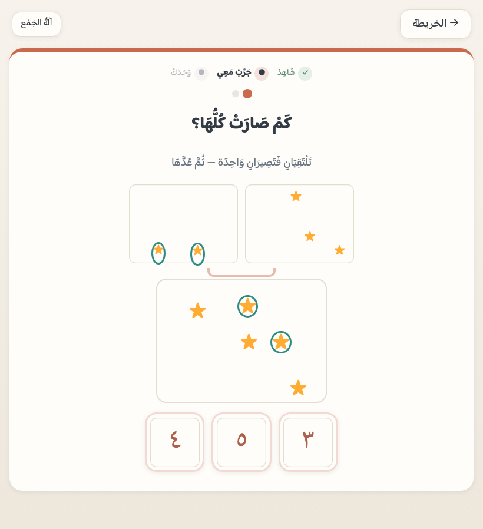
آلةُ الجمع ثم جملتُها بالرمز: يلتقي الجمعان فتُعَدّ
الحصيلة أولاً — ثم يظهر «+» اسماً لذلك الفعل.
نوع محطة · مزدوجات
المُزْدَوَجَاتُ ضِمْنَ ١٠ · وَإِلَى ٢٠
٢محطتان
ماذا يتعلّم الطفل
المزدوجاتِ (٢+٢ … ١٠+١٠) — وهي أقوى ما يُبنى عليه الحسابُ
الذهنيّ: مَن عرف ٦+٦ عرف ٦+٧ بعدها بخطوة.
كيف يعمل التمرين
كمّيتان متطابقتان عن جنبَي خطّ مرآة — فيُرى التساوي ولا
يُقال. والجوابُ مجموعُ ما رُسِم فيهما، وعند الخطأ يُسمّى النصفُ
ثم يُعَدّ الآخرُ فوقه (وفوق العشرة تُسمَع وقفةُ الحزمة).
دورُك أنت
المزدوجاتُ تُلعَب باليدين: «خمسةٌ وخمسة» على الأصابع — وهي أوّلُ
حقائقَ تُحفَظ بلا تكرارٍ ممل.
أنّ الطرحَ إزالةٌ مرئية: ما شُطب غادر، والباقي هو
الجواب. وآخرُها في المرحلة ٧: طرحٌ يعبر العشرة نازلاً.
كيف يعمل التمرين
تُشطَب العناصرُ المغادِرة أمامه ويُقرأ الباقي من الرسم. والعدُّ
عند الخطأ تنازليٌّ مع كل مغادر — عدُّ درسِه لا عدٌّ واحد
للجميع.
دورُك أنت
قُل «كم بقي؟» لا «كم الناتج؟» — لغةُ الطرح إزالةٌ لا حساب.
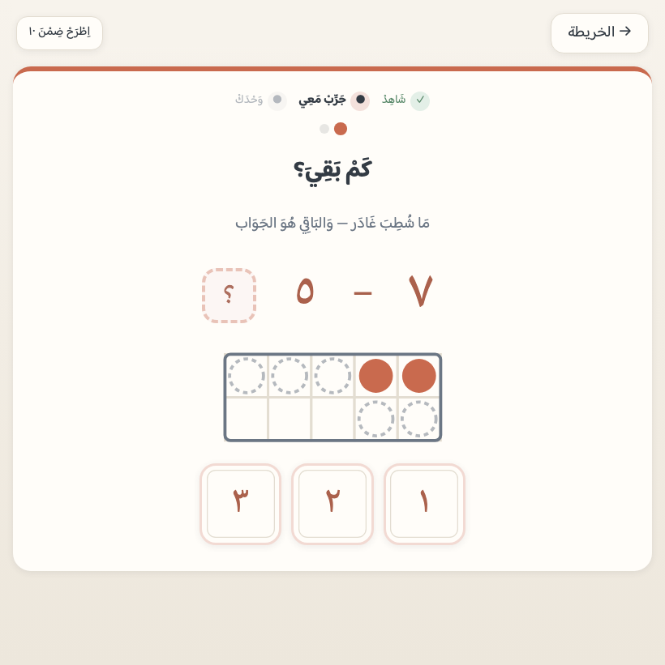
جملةُ الطرح بالرمز: ما شُطب غادر، والباقي هو الجواب — مقروءاً من
الرسم.
نوع محطة · فرق
كَمِ الفَرْقُ بَيْنَهُمَا؟
١محطة
ماذا يتعلّم الطفل
الوجهَ الثاني للطرح: المقارنةُ لا الإزالة — «كم يزيد هذا على
ذاك؟».
كيف يعمل التمرين
صفّان متحاذيان يُرصّ أحدهما تحت الآخر، والفائضُ ظاهرٌ للعين —
وهو الجواب مقروءاً من الرسم.
دورُك أنت
قارِنْ معه أشياءَ متجاورة في البيت — الفرقُ يُرى قبل أن يُحسب.
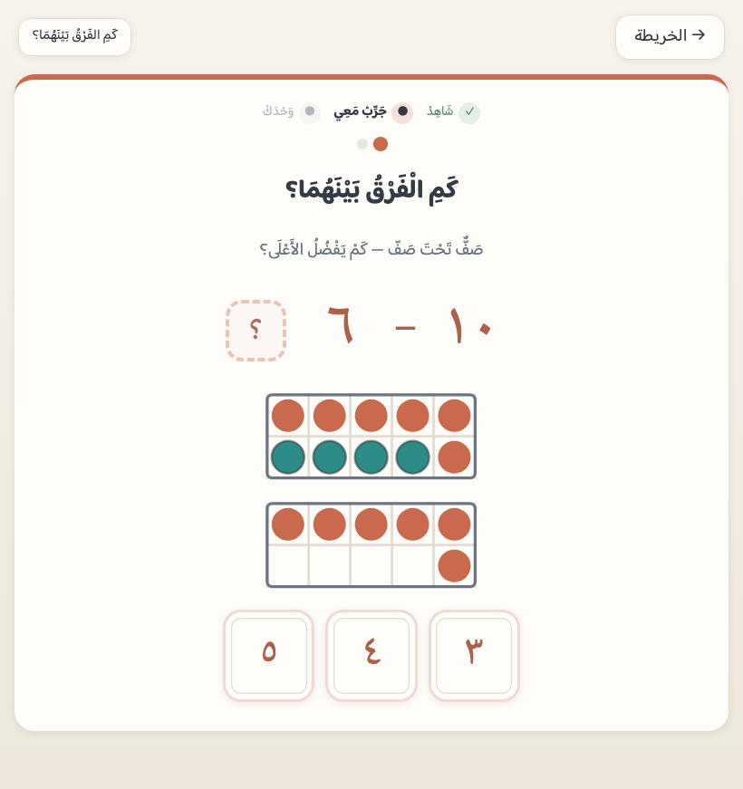
الفرقُ يُرى: صفٌّ تحت صفّ، والفائضُ ظاهرٌ للعين — وهو الجواب.
نوع محطة · الصفر في العمليات
الصِّفْرُ فِي العَمَلِيَّات
١محطة
ماذا يتعلّم الطفل
أنّ إضافة لا شيءٍ لا تغيّر، وأنّ طرحَ الكلِّ يُبقي لا شيء —
وهي قاعدةٌ تُرى ولا تُحفَظ.
كيف يعمل التمرين
جملٌ فيها الصفر، وكمّيتُها مرسومةٌ عوناً — و«لا شيء»
إطارٌ فارغٌ خاناتُه مرسومة لا ساحةٌ خالية.
دورُك أنت
لا شيءَ يُطلب — هذه محطةٌ قصيرة، وهي أصعبُ مما تبدو.
نوع محطة · طلاقة
طَلَاقَةٌ ضِمْنَ ١٠ · وَضِمْنَ ٢٠
٢محطتان
ماذا يتعلّم الطفل
أن يستدعي ما بناه — جمعاً وطرحاً ضمن العشرة — بالرمز وحدَه،
بلا مؤقّتٍ ولا سباق.
كيف يعمل التمرين
جملٌ متتابعة، والكمّيةُ تحضر بالنقر لمن أرادها — والاستعانةُ
بها لا تُحتسَب عليه.
دورُك أنت
لا تقس الوقت. الطلاقةُ عندنا صحّةٌ لا سرعة — والسرعةُ تأتي
بالتكرار المتباعد.
المرحلة ٧ — العَشَرَةُ وَمَا بَعْدَهَا ١١–٢٠
إحدى عشرةَ محطة، وقاعدتُها أنّ ما فوق العشرة
يُبنى ولا يُعَدّ فرادى:
حزمةُ عشرةٍ تُعلَّم دفعةً واحدة وتُسمّى تامّة، ثم تُعَدّ الآحادُ فوقها.
نوع محطة · عشرةٌ وآحاد
حُزْمَةُ العَشَرَة · ١١–٢٠
٤محطات
ماذا يتعلّم الطفل
أنّ «أَرْبَعَةَ عَشَرْ» عشرةٌ وأربعة: يبنيها في
إطارين، ثم يقرأ اسمَها — والقراءةُ بعد البناء لا قبله.
كيف يعمل التمرين
خانتان: حزمةُ عشرةٍ ممتلئة وآحادٌ فوقها. ولا لمسَ ولا عدَّ
آحادٍ فوق العشرة — الحزمةُ تُسمّى تامّةً ثم يُعَدُّ فوقها.
دورُك أنت
استعمل اللفظَ نفسَه في البيت: «عشرةٌ وثلاثة» قبل «ثلاثةَ
عشر».
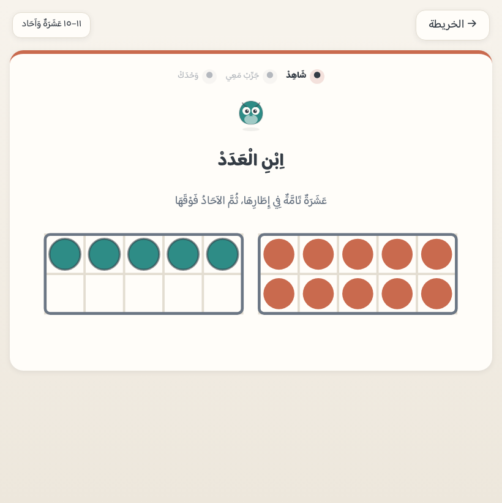
نوع محطة · عبورُ العشرة
اِصْنَعْ عَشَرَةً أَوَّلًا · ثُمَّ تَثْبِيتُهُ
٢محطتان
ماذا يتعلّم الطفل
استراتيجيةَ العبور: يُكمل العشرةَ أوّلاً ثم يضيف ما بقي — وهي
ثمرةُ «أصدقاء العشرة» في المرحلة ٥.
كيف يعمل التمرين
سؤالان لا واحد، ولكلٍّ مشهدُه: «كم بقي لتمتلئ العشرة؟»
والإطاران وحدَهما، ثم يُرى العبورُ حركةً — تنتقل النقاطُ
إلى الخانات الفارغة واحدةً واحدة حتى تكتمل العشرة — فيُسأل «كم
صارت معاً؟» ومعه جملةُ الجمع التي خانتُها جوابُه، والحصيلةُ
حزمةٌ وآحادٌ في الإطارين. ومحطتان لا واحدة: الأولى تعبر
من قريبٍ من العشرة، والتي تثبّتها تعبر من أبعد — بحقائقَ جديدة
لا بإعادة ما مضى.
دورُك أنت
إن تعثّر فارجع معه إلى «أصدقاء العشرة» — التطبيق نفسُه يفعلها
في المراجعة.
نوع محطة · عدٌّ قفزيّ
اِعْدُدْ قَفْزًا
١محطة
ماذا يتعلّم الطفل
أن يعدّ بالاثنين والخمسة والعشرة حتى العشرين — وهو بابُ
الضرب ولا يُسمّى ضرباً، وبابُ قراءة الساعة والنقود بعده.
كيف يعمل التمرين
خطُّ الأعداد مرسومٌ ومواقعُ القفزات الأولى مُضاءة،
والسؤالُ أين تقع التالية. والقفزةُ تُقرأ من الخطّ نفسِه، وعند
الخطأ يُقفَز عليه من الصفر باسم كل موضعٍ يُبلَغ.
دورُك أنت
عُدّا معاً درجاتَ السلّم اثنتين اثنتين — القفزُ يُلعَب بالقدمين
قبل أن يُرى على خطّ.
المرحلة ٨ — الأَنْمَاطُ وَالقِيَاسُ الوَصْفِيّ
ستُّ محطات تُقاس بالوجه لا بالعدد: النمطُ إيقاعٌ يُرى، والقياسُ
مقارنةُ مقاديرَ بلا مسطرة، وآخرُها محطةُ تعارفٍ على الأرقام المغربية.
نوع محطة · نمط
نَمَطُ (أ ب أ ب) وَ(أ ب ج) · وَالنَّمَطُ العَدَدِيّ
٣محطات
ماذا يتعلّم الطفل
أن يرى القاعدةَ في تكرارٍ ويُتمّه — وهو أوّلُ تفكيرٍ جبريّ
في حياته.
كيف يعمل التمرين
شريطٌ من رموز عالمه وآخرُه خانةُ سؤال، والجوابُ ما يبعد
دورةً كاملة مقروءاً من الشريط المرسوم. وبالإصابة تتمّ
الخانةُ فيُرى النمطُ تامّاً. وثالثتُها شريطُ أرقام: يقفز
بالاثنين أو الخمسة أو العشرة، فيُقرأ الإيقاعُ عدداً كما رُئي
صورةً — وهي قفزاتُ «اِعْدُدْ قَفْزاً» نفسُها.
دورُك أنت
اصنعا نمطاً بالملاعق على الطاولة — ثم اسأله: «ما التالي؟».
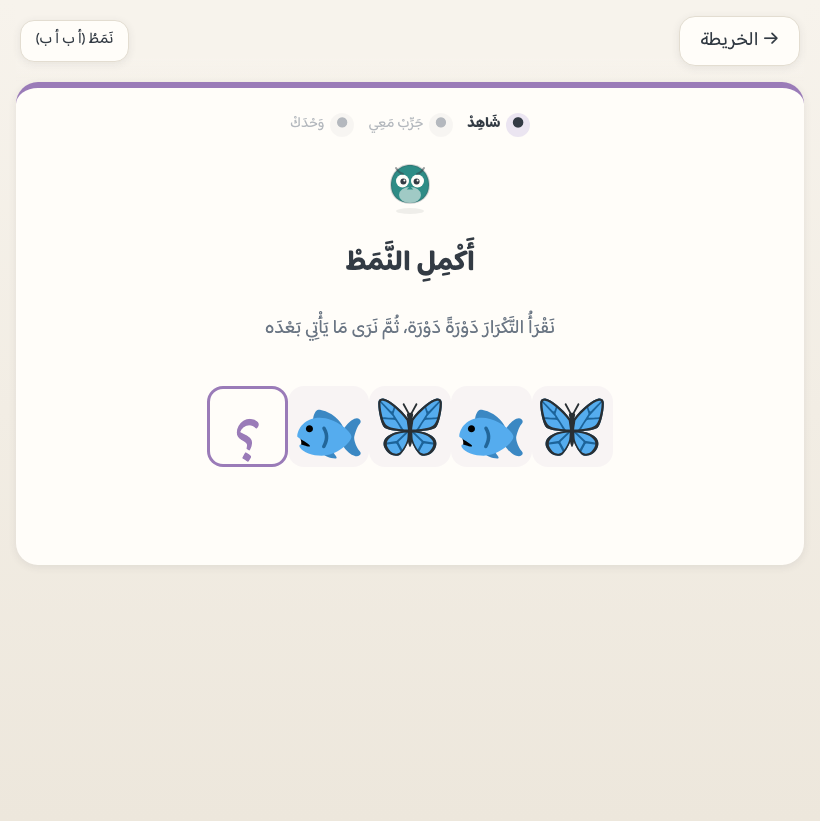
نوع محطة · قياسٌ وصفيّ
أَطْوَلُ وَأَثْقَل · قَبْلُ وَبَعْد
٢محطتان
ماذا يتعلّم الطفل
أن يقارن مقاديرَ بلا أداة: الأطولَ والأقصر، والأثقلَ والأخفّ،
وترتيبَ ما قبلُ وما بعد.
كيف يعمل التمرين
وجهان يقفان على خطٍّ واحد: مقاديرُ الشيء الواحد في الطول،
وأشياءُ مختلفة بمقدارٍ واحد في الثقل والزمن — فالفيلُ
أثقلُ من الريشة بيانُ منهجٍ لا حجمُ رسم، ولا حكمَ في
الحجم أبداً.
دورُك أنت
زِنْ بيديه شيئين في البيت — الثقلُ إحساسٌ قبل أن يكون كلمة.
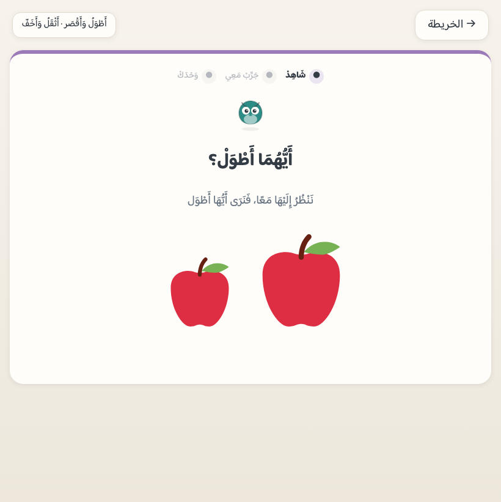
نوع محطة · ترتيبيّة
الأَوَّلُ وَالثَّانِي وَالثَّالِث
١محطة
ماذا يتعلّم الطفل
أن يسمّي موضعاً بترتيبه لا بعدده: العددُ يقول «كم»،
والترتيبيُّ يقول «أين» — وهما درسان لا درس.
كيف يعمل التمرين
صفٌّ من ثلاثةِ أشياءَ إلى خمسة، ويُسمَع «أَيْنَ الثَّالِثْ؟»
فيلمس موضعَه. والعدُّ يبدأ من اليمين — جهةُ ملء الإطار
وبدءِ خطّ الأعداد نفسُها. ولا رقمَ على الشاشة البتّة:
لغتُها أسماءُ الترتيب. والخطأُ يُسمَّى أمامه: يُضاء
موضعٌ بعد موضعٍ باسم ترتيبه حتى المطلوب.
دورُك أنت
في الطابور أو صفِّ الأحذية: «مَن الأول؟ ومَن الثاني؟» — ثم
اقلبا الجهة وأعيدا السؤال.
نوع محطة · تعارُف
تَعَارُفٌ: أَرْقَامٌ أُخْرَى
١محطة
ماذا يتعلّم الطفل
أنّ للرقم الذي يعرفه (١٢٣) رسماً آخر يراه على الساعات والكتب
(123) — تعارفٌ لا تدريس.
كيف يعمل التمرين
عرضٌ بلا سؤالٍ ولا خطأ: صفّان متقابلان، ونجمتُها تُنال
بالمشاهدة. وهي المحطةُ الوحيدة في التطبيق التي فيها رقمٌ
مغربيّ.
دورُك أنت
أرِه رقمَ الباب أو المصعد — الرسمُ الآخر حولنا كلَّ يوم.
المرحلة ٩ — الأَشْكَالُ الأُولَى
أربعُ محطاتٍ في ذيل الرحلة قبل بوابة الختام: الدائرةُ والمثلثُ
والمربّعُ والمستطيل — اسماً ورسماً، ثم عدُّ الأضلاع الذي يوظّف عدَّه
المتقن، ثم الشكلُ في الحياة لا في الورقة. والأشكالُ كلُّها
يرسمها التطبيقُ هندسياً لا صوراً: ثلاثُ قِطَعٍ في المثلث تُعَدّ
بالإصبع، فلا يُدرَّس ضلعٌ على صورةٍ لا ضلعَ فيها.
أن يوزّع كميةً على وعاءين أو ثلاثةٍ بالتساوي، وأن يعرف
نصيبَ الواحد لا مجموعَ الكلّ، وأن بعضَ الأعداد
يبقى منها واحد.
كيف يعمل التمرين
كومةٌ وأوعية، واللمسُ مباشر: لمسةٌ داخل الوعاء تأتي
بواحد، ولمسةٌ على ما فيه تُعيده — وهو لوحُ «اجعلهما سواء»
نفسُه. والجوابُ يُعلَن كبسةً على صورةٍ بلا حرف، فلا
يُكافَأ وصولٌ بلا قصد. والعدلُ أن تستوي الأوعيةُ
ولا يبقى ما يُقسَم — وما بقي يُرى ويُسمّى ولا
يُعَدّ خطأً. والخطأُ يُوزَّع أمامه بالتناوب: واحدٌ لهذا
وواحدٌ لهذا، ويُسمَّى نصيبُ كلٍّ وهو يكبر.
دورُك أنت
اقسما التمرَ بينكما حبّةً حبّة — «واحدةٌ لك وواحدةٌ لي» —
ثم اسأله: كم صار لكلٍّ منّا؟
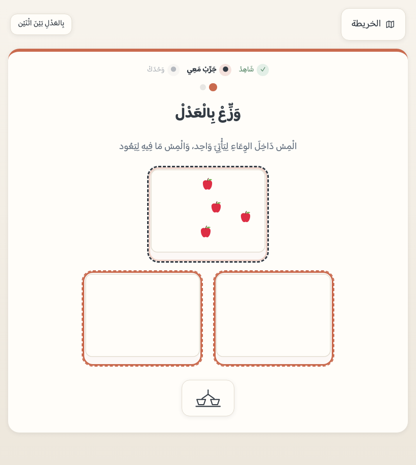
المرحلة ١١ — القِيَاسُ بِوَحْدَة
ثلاثُ محطاتٍ تجسر من الوصف إلى القياس: المرحلة ٨ قارنت «أطولَ وأقصر»
بالعين، وهذه تسأل «كم وحدةً؟» — فتصير المقارنةُ قياساً،
وهو عدٌّ مُطبَّق: تكرارُ وحدةٍ واحدة وعدُّها. ولذلك جاءت بعد أن
أتقن العدَّ بعشر مراحل، لا قبله.
أن يقيس طولاً بوحدةٍ تتكرّر، وأن يحكم بالعدد لا
بالنظر، وأن يرصّ الوحداتِ بنفسه ثم يعدّها.
كيف يعمل التمرين
شريطٌ تُرصّ تحته وحداتٌ متلاصقةٌ من طرفه — ولا فجوةَ
ولا تراكب: موضعُ كلِّ وحدةٍ محسوبٌ من دليلها، فالقياسُ
الصادق شرطُ بنيةٍ لا وعدُ رسم، والوحدةُ واحدةٌ في
السؤال. وفي المقارنة يفترق الشريطان بوحدةٍ واحدة
فلا تحسمها النظرة. وفي «قِسْ بيدك» يرصّ الطفلُ بنفسه
ولا يستطيع أن يتجاوز الشريط، ثم يُعلن قياسَه كبسةً
فتُعَدّ أمامه.
دورُك أنت
قيسا الطاولةَ بكفّه أو بملعقة — «كم كفّاً؟» — ثم قيساها
بكفّك أنت، وتحدّثا عن الفرق.
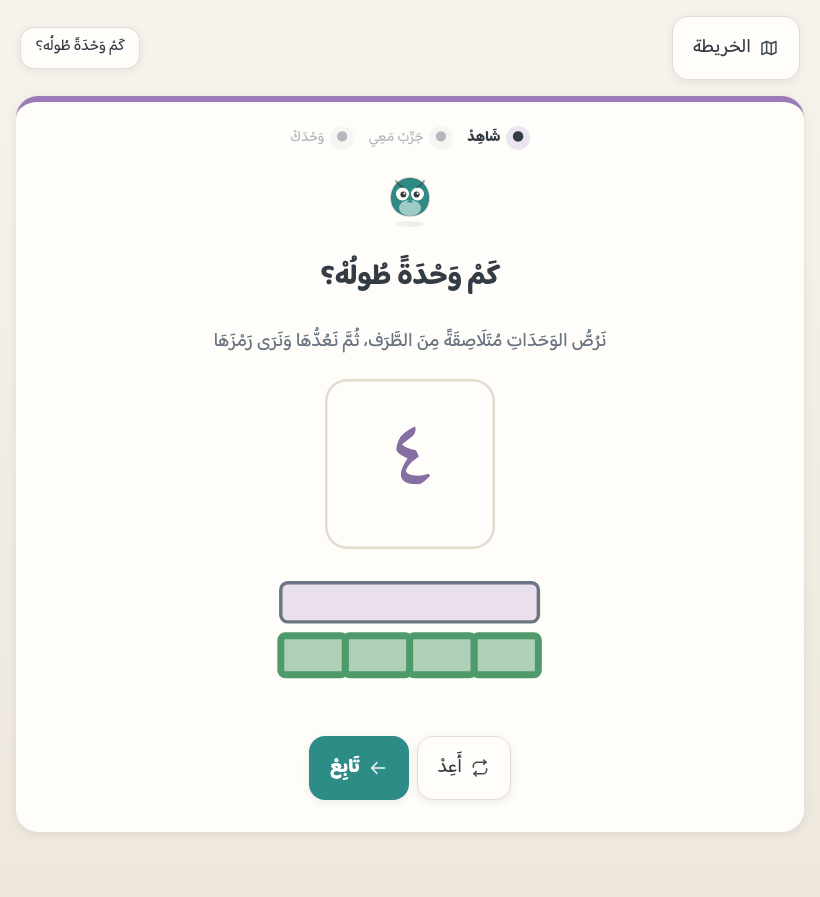
القياس والمراجعة — كيف يتذكّر التطبيقُ ما تعثّر فيه
لكل (مفهومٍ × مدى × نوعِ تمرين) مفتاحُ قياسٍ مستقلّ —
٦٣ مفتاحاً في الرحلة كلِّها. والمفتاحُ يصعد
صندوقاً بالإصابة وينزل بالخطأ، ويعود في موعده (يوم، يومان، أربعة،
ثمانية، ستةَ عشر). ولذلك يتعثّر الطفلُ في «٧» ولا يخفيه إتقانُه لِـ«٣».
و«مراجعةُ اليوم» بطاقةٌ فوق الخريطة تجمع ستةَ تمارينَ من
أضعف ما في يده — تمارينُ الرحلة نفسُها لا اختباراً آخر. وتفصيلُ
ما تريه اللوحةُ لوليّ الأمر في الدليل العملي.
الرحلةُ كلُّها في جهازك
٧١ محطة و٢١٣ نجمة —
بلا حساب، وبلا إنترنت بعد أوّل فتحة.